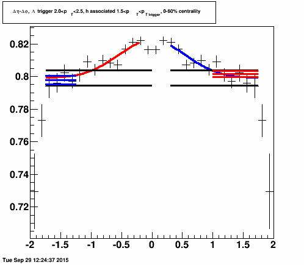
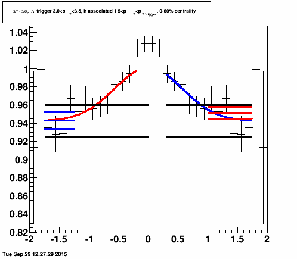
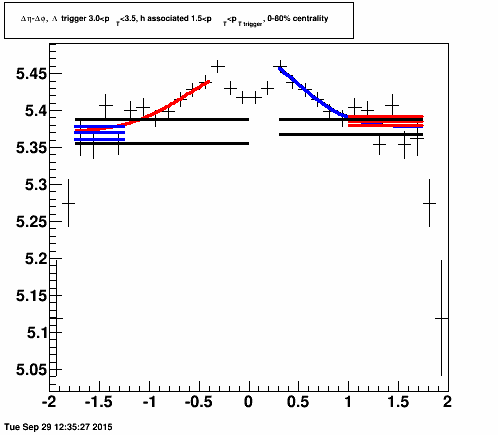
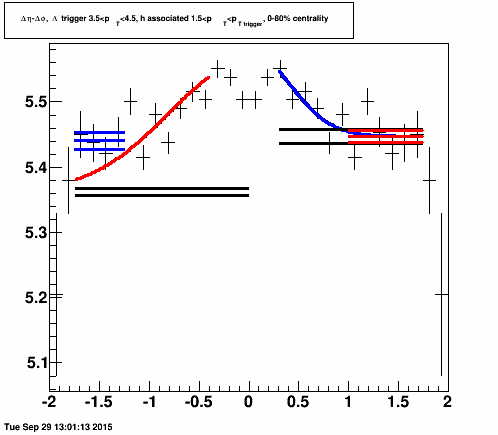
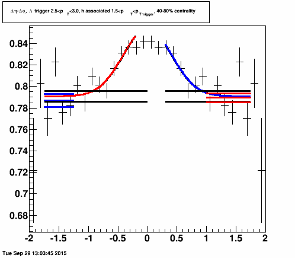
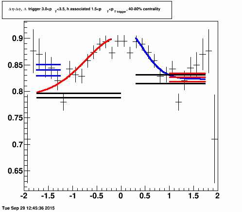

Minutes and outstanding action items from GPC meeting 23 April 2015
E4, E6, E12, E15, and E18 Some show dips, here I also would like to see how the fits look like by varying the fit range on both ends (background as done before + close to the dip, maybe one bin less).For all plots below The left red fit is Gaussian+constant fit to deta = 0.2, the blue fit is a Gaussian+ constant fit to deta = 0.3, and the black lines show the upper and lower bounds on the background extracted from each of these fits. The left blue fit is a fit to a constant from deta = 1.25 to 1.75 and the right red fit is a fit to a constant from deta = 1.0 to 1.75.
 |
E4 - Cu+Cu lam 2-2.5 Gaussian+constant to deta=0.2: Background: 0.799 +/- 0.005 corresponding uncertainty in yield 0.008 Gaussian+constant to deta=0.3: Background: 0.799 +/- 0.005 corresponding uncertainty in yield 0.008 Fit from 1.0-1.75: Background: 0.802 +/- 0.002 corresponding uncertainty in yield 0.003 Fit from 1.25-1.75: Background: 0.798 +/- 0.003 corresponding uncertainty in yield 0.004 Eta fit :0.0270055+/-0.0107988 Eta bin count: 0.0269543 +/- 0.00184276 +/- 0.00823144 Smaller range fit yield: 0.027 +/- 0.011 The fit is used here due to the residual dip. The background with various methods is always within error of the method we use. Here I increased the number of decimal points to show that the fit indeed is higher than the bin counting. Chi2 binning max eta0.2 ############## Chi2 10.6202 NDF 9 ############## Chi2/NDF 1.18002 Chi2 binning max eta0.3 ############## Chi2 10.6202 NDF 9 ############## Chi2/NDF 1.18002 Chi2 const binning max eta 1.0-1.75 ############## Chi2 7.5965 NDF 5 ############## Chi2/NDF 1.5193 Chi2 const binning max eta 1.25-1.75 ############## Chi2 1.17732 NDF 3 ############## Chi2/NDF 0.392438 |
 |
E6 - Cu+Cu lam 3-3.5 Gaussian+constant to deta=0.2: Background: 0.943 +/- 0.017 corresponding uncertainty in yield 0.027 Gaussian+constant to deta=0.3: Background: 0.943 +/- 0.017 corresponding uncertainty in yield 0.027 Fit from 1.0-1.75: Background: 0.952 +/- 0.007 corresponding uncertainty in yield 0.010 Fit from 1.25-1.75: Background: 0.943 +/- 0.009 corresponding uncertainty in yield 0.014 Eta fit :0.069+/-0.040; Eta bin count:0.083 +/- 0.007 +/- 0.027; Smaller range fit yield: 0.069 +/- 0.041 We use the bin count yield here. The background with various methods is always within error of the method we use. Chi2 binning max eta0.2 ############## Chi2 6.17467 NDF 9 ############## Chi2/NDF 0.686074 Chi2 binning max eta0.3 ############## Chi2 6.17466 NDF 9 ############## Chi2/NDF 0.686073 Chi2 const binning max eta 1.0-1.75 ############## Chi2 6.28451 NDF 5 ############## Chi2/NDF 1.2569 Chi2 const binning max eta 1.25-1.75 ############## Chi2 3.82297 NDF 3 ############## Chi2/NDF 1.27432 |
 |
E12 - Au+Au central lam 3-3.5 Gaussian+constant to deta=0.2: Background: 5.371 +/- 0.017 corresponding uncertainty in yield 0.026 Gaussian+constant to deta=0.3: Background: 5.378 +/- 0.010 corresponding uncertainty in yield 0.015 Fit from 1.0-1.75: Background: 5.386 +/- 0.006 corresponding uncertainty in yield 0.009 Fit from 1.25-1.75: Background: 5.370 +/- 0.008 corresponding uncertainty in yield 0.013 Eta fit :0.103+/-0.036 Eta bin count:0.097 +/- 0.006 +/- 0.026 Smaller range yield: 0.105 +/- 0.021 While the background from the standard fit is not within error of all of the backgrounds, the yield is more uncertain with this fit because the fit isn't as good. (We could instead use the fit with the narrower range but this would actually lead to a smaller uncertainty.) Note here that the error on the background is larger on the right (smaller range) but the uncertainty on the yield is smaller. This is because the covariance between the yield and the background is non-trivial and it is therefore not straightforward to determine how to use the background from alternate methods when determining the yield when the fit is used to determine the yield. If this point alone would lead to a major change in the method, we would prefer to eliminate this point since it is not important for the physics conclusions of the paper. We therefore propose cutting this point. Chi2 binning max eta0.2 ############## Chi2 24.2587 NDF 9 ############## Chi2/NDF 2.69541 Chi2 binning max eta0.3 ############## Chi2 16.2125 NDF 9 ############## Chi2/NDF 1.80139 Chi2 const binning max eta 1.0-1.75 ############## Chi2 13.9622 NDF 5 ############## Chi2/NDF 2.79244 Chi2 const binning max eta 1.25-1.75 ############## Chi2 2.45679 NDF 3 ############## Chi2/NDF 0.81893 |
 |
E15 - Au+Au central K0 3.5-4.5 This fit did not work and Christine would have to dig through old backups to figure out how to initialize the fit in order to get it to converge. We would prefer to have a conclusion from this discussion before doing that work. THROW OUT THIS POINT Chi2 binning max eta0.2 ############## Chi2 19.8486 NDF 9 ############## Chi2/NDF 2.2054 Chi2 binning max eta0.3 ############## Chi2 20.1046 NDF 9 ############## Chi2/NDF 2.23385 Chi2 const binning max eta 1.0-1.75 ############## Chi2 13.3133 NDF 5 ############## Chi2/NDF 2.66266 Chi2 const binning max eta 1.25-1.75 ############## Chi2 9.27528 NDF 3 ############## Chi2/NDF 3.09176 |
 |
Chi2 binning max eta0.2 ############## Chi2 18.0815 NDF 9 ############## Chi2/NDF 2.00905 Chi2 binning max eta0.3 ############## Chi2 18.0815 NDF 9 ############## Chi2/NDF 2.00905 Chi2 const binning max eta 1.0-1.75 ############## Chi2 11.6999 NDF 5 ############## Chi2/NDF 2.33998 Chi2 const binning max eta 1.25-1.75 ############## Chi2 9.78298 NDF 3 ############## Chi2/NDF 3.26099 |
 |
E18 - Au+Au 40-80% lam 3-3.5 Gaussian+constant to deta=0.2: Background: 0.792 +/- 0.004 corresponding uncertainty in yield 0.007 <--FIT DID NOT CONVERGE! This is not valid. Gaussian+constant to deta=0.3: Background: 0.823 +/- 0.008 corresponding uncertainty in yield 0.013 Fit from 1.0-1.75: Background: 0.826 +/- 0.008 corresponding uncertainty in yield 0.012 Fit from 1.25-1.75: Background: 0.840 +/- 0.0107 corresponding uncertainty in yield 0.017 Eta fit :0.144+/-0.077 Eta bin count:0.141 +/- 0.008 +/- 0.007 <- This is not valid because the background is from the fit which did not converge. Smaller range fit yield: 0.100 +/- 0.018 We use the fit here due to the residual dip. Note that the fit with a larger range (left) did not converge. This fit should be ignored. Again, since there is a strong correlation between the yield and the background, it is not straightforward how to use the background from another method to extract the yield using a fit. Chi2 binning max eta0.2 ############## Chi2 24.2587 NDF 9 ############## Chi2/NDF 2.69541 Chi2 binning max eta0.3 ############## Chi2 16.2125 NDF 9 ############## Chi2/NDF 1.80139 Chi2 const binning max eta 1.0-1.75 ############## Chi2 13.9622 NDF 5 ############## Chi2/NDF 2.79244 Chi2 const binning max eta 1.25-1.75 ############## Chi2 2.45679 NDF 3 ############## Chi2/NDF 0.81893 |